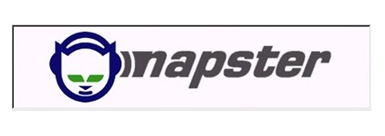

People
The internet is all about communication/ connecting individuals or connecting individuals to information.
Youtube
Before websites like youtube, it was almost impossible for the average person to get into the T.V industry. It was a system that decided on its own what would get on to the air. But now, this is accessible to everyone mainly because of youtube, which has given everyone their own broadcast tower, and don’t have to rely on big media companies to be heard.
Digg
Digg is a news website, but unlike other news which is decided by the publisher as to what the people see, what land on Digg’s front page is decided by the people. The more people who vote for a given story, the more prominent it gets on the site.
Music industry
Music/sound industry was another major thing that was affected by the internet. Before any applications came out for music, people bought records containing albums, and could not pick out specific songs to buy. The Mp3 was created which allowed people to download music off the internet and save it on their pc. This was really helpful and allowed people to download music, but it was still hard to search for specific songs on the web.
Shawn Fanning created a website called Napster was a website which allowed computers to talk and share music with computers of other users, this meant that if someone had a mp3 of a song that was wanted, it could easily be found on napster just by typing in the name of the song, and it would be downloaded onto the hard drive straight from theirs.
Napster effect
Napster had exploded as people could download any music they liked for free. The record companies and music artists were not too amused by this and filed lawsuits against napster. The reason for such frustration was because music artists were not able to make profits nor where the record sellers.
The decision from the court was final, napster had to be shut down immediately. Although napster had shut down, it had encouraged steve jobs and itunes to make its own music store where songs were sold per piece, with strict copyright protection.
There are also web pages that don’t look for high profits and just want to make it easier to connect and communicate freely, like craigslist and wikipedia which are free websites and allow users to use it freely.
This was an era in which the content was created by the crowd, this era was known as the web 2.0 people either created content or were involved somehow in changing the web.